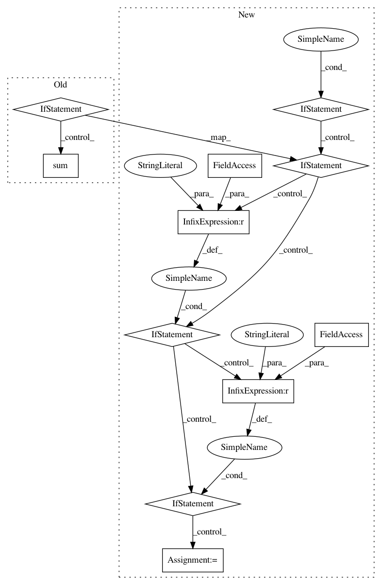

48282d57a0f11094d71c7310898ab347e6b847b3,nilearn/signal.py,,_standardize,#,23
Before Change
signals = signals.copy()
if normalize:
if signals.shape[0] == 1:
warnings.warn("Standardization of 3D signal has been requested but "
"would lead to zero values. Skipping.")
return signals
if not detrend:
// remove mean if not already detrended
signals = signals - signals.mean(axis=0)
std = np.sqrt((signals ** 2).sum(axis=0))
std[std < np.finfo(np.float).eps] = 1. // avoid numerical problems
signals /= std
return signals
After Change
copy of signals, standardized.
if standardize not in [True, False, "psc", "zscore"]:
raise ValueError("{} is no valid standardize strategy."
.format(standardize))
if detrend:
signals = _detrend(signals, inplace=False)
else:
signals = signals.copy()
if standardize:
if signals.shape[0] == 1:
warnings.warn("Standardization of 3D signal has been requested but"
" would lead to zero values. Skipping.")
return signals
elif (standardize == "zscore") or (standardize is True):
if not detrend:
// remove mean if not already detrended
signals = signals - signals.mean(axis=0)
std = signals.std(axis=0)
std[std < np.finfo(np.float).eps] = 1. // avoid numerical problems
signals /= std
elif standardize == "psc":
mean_signal = signals.mean(axis=0)
invalid_ix = mean_signal < np.finfo(np.float).eps
signals = (signals / mean_signal) * 100
signals -= 100
if np.any(invalid_ix):
warnings.warn("psc standardization strategy is meaningless "
"for features that have a mean of 0 or "
"less. These time series are set to 0.")
signals[:, invalid_ix] = 0
return signals
def _mean_of_squares(signals, n_batches=20):
In pattern: SUPERPATTERN
Frequency: 3
Non-data size: 11
Instances
Project Name: nilearn/nilearn
Commit Name: 48282d57a0f11094d71c7310898ab347e6b847b3
Time: 2019-03-25
Author: gilles.de.hollander@gmail.com
File Name: nilearn/signal.py
Class Name:
Method Name: _standardize
Project Name: rasbt/mlxtend
Commit Name: 1309ae7802aede445fa4bf943eee09422724e8e6
Time: 2016-03-08
Author: mail@sebastianraschka.com
File Name: mlxtend/evaluate/scoring.py
Class Name:
Method Name: scoring
Project Name: rasbt/mlxtend
Commit Name: 1ac01c049faee3044894bd3428ac6021b069d516
Time: 2016-03-16
Author: mail@sebastianraschka.com
File Name: mlxtend/evaluate/scoring.py
Class Name:
Method Name: scoring